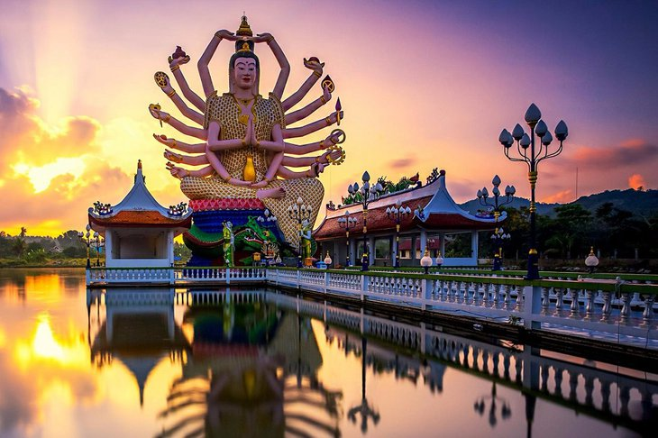

Климат.
Таиланд расположен в зоне муссонного тропического и субтропического климата, для которого характерна погода с сезонным чередованиемветров и сравнительно высокая температура в течение всего года. Примечательно, что чем ближе Вы находитесь к экватору, тем меньшеперепад температур и погодных условий. В большей части Таиланда различают три погодных сезона: -жаркий сезон: март-май, средняя температура от 29 до 38 градусов -сезон муссонных дождей: июнь - октябрь, правда, с большим количеством солнечных дней, средняя температура от 26 до 32 градусов. "Сезон дождей", хоть он и имеет такое название, не так страшен, как его зачастую представляют. Частые проливные дожди в Таиландеприходятся на август - сентябрь и в основном на центральную, северную, северо-западную и северо-восточную часть страны. Октябрь -обычно последний месяц влажного сезона. В Паттайе, на островах Пхукет и Самуи проливные дожди не продолжительны и идут главным образом во второй половине дня или в ночноевремя от 15 минут до 2-3 часов. -сухой сезон: ноябрь-февраль, средняя температура от 19 до 30 градусов В целом климат в Таиланде устойчиво жаркий на протяжении круглого года.
Язык Таиланда.
Государственный язык Таиланда - тайский. Распространены английский, китайский и японский языки.
Религия Таиланда.
В «Стране Свободы» король является лидером и символом нации, он – покровитель и защитник всехвероисповеданий. Всенародное обожание королевской семьи здесь носит практически религиозный характер. Практически все население Тайланда, а это 95% исповедует буддизм традиции тхеравада.И лишь малое количество тайцев исповедуюислам и христианство.Есть также люди,которые исповедуют христианство, и в Тайланде даже имеются католические и православные церкви. Кроме тогтайцы относятся хорошо к любой религии. Но все же большинство тайцев тяготеет к буддизму,так как это религия их предков, это идревние традиции на которых воспитывалось не одно поколение.Неуважение религиозных чувств тайцев преследуется по закону! Нельзя залезать на статуи Будды, дотрагиваться руками до головы тайцев, трогать руками буддийского монаха. При посещении храмов обязательно снимайте обувь.
Часовой пояс Таиланда.
Разница во времени с Киевом: +4 часа в период действия по Украине летнего времени, часа в период зимнего времени.
Валюта Таиланда.
Денежной единицей Таиланда является бат (международное обозначение – THB). Курс: стоимость $1 колеблется в пределах от 33 до 36 батов. Один бат делится на 100 сатангов. Банкноты выпускаются достоинством 20 батов (зеленые), 50 батов (голубые), 100 батов (красные), 500 батов (лиловые), 1000 батов (коричневыеВ большинстве банков, торговых центрах и гостиниц можно пользоваться основными международными кредитными картами, такими как American Express, MasterCard, Visa. 
Кухня Таиланда.
Всякий, кто попробует блюда тайской кухни, согласится, что она принадлежит к числу лучших в мире. Успех ее заключается в непривычном для любого иностранца сочетании четырех составляющих вкуса: соленое, сладкое, кислое, горькое - комбинации которых дают разнообразные и неожиданные вкусовые оттенки. Тайцы - превосходные повара и гостеприимные хозяева. Здесь принято есть 5-6 раз в день. Классический обед состоит из ароматного риса, супа, жаркого, тайского салата, овощей на пару и фруктов. В Таиланде не принято регламентировать порядок блюд во время трапезы. Все кушанья одновременно подаются на стол, и каждый берет себе то, что ему по вкусу в данный момент. Что касается спиртных напитков, то здесь они по большей части слабоалкогольные. Самый ходовой - местное пиво. Виски, коньяк, водка и прочие крепкие напитки не пользуются большой популярностью. В тайской кухне удивительным образом перемешались черты индийских, китайских, камбоджийских и европейских рецептур. Характерные черты тайский кухни - обилие пряностей и специй и любовь к рису. Ни одна трапеза в этой стране не обходится без риса в качестве гарнира. Очень важную роль играют также блюда из соевых бобов. Отличительной особенностью тайской кухни является то, что говядину здесь практически не используют - блюда из этого сорта мяса вы найдете лишь в ресторанах европейской кухни, да и то не всегда. Дело в том, что здесь вообще не занимаются разведением коров. Кстати, эквивалентом молочных продуктов в этой стране выступают продукты, изготовленные из кокосового молока.Наиболее популярны такие блюда, как том ям кун(СУП ТОМ ЯМ КУНГ С КРЕВЕТКАМИ ТАЙСКИЙ) - острый суп с креветками, том кха гай - суп на кокосовом молоке с кусочками курицы, лаап ныа - рубленая говядина, сом там - салат из зеленой папайи с креветками в устричном соусе. По Вашему желанию блюда могут быть приготовлены менее острыми, либо, вообще, без перца. Не старайтесь запить острые соусы водой. Поступайте лучше так, как сами тайцы: закажите побольше риса. Таиланд предлагает гурманам огромный выбор морепродуктов. Устрицы, мидии, кальмары, трепанги, креветки и крабы плавают в огромных аквариумах или выложены на льду в многочисленных ресторанах морской кухни, где Вы сможете выбрать их для приготовления понравившегося Вам блюда. Таиланд - одна из немногих тропических стран, которая удивит Вас огромным разнообразием экзотических фруктов. Некоторые из них уже появились на прилавках наших магазинов и многим пришлись по вкусу. Стабильность климата Таиланда позволяет снимать до трех урожаев фруктов в год. Все они выращены без использования химических удобрений, поэтому являются экологически чистыми и очень полезными для здоровья.
Магазины и покупки.
Торговые центры и магазины Таиланда не случайно считаются одними из лучших в Юго-Восточной Азии. Сочетание огромного ассортимента и высокого качества, предлагаемых магазинами Таиланда, товаров с доступными ценами делает их абсолютно неотразимыми в глазах любителей шопинга.Одной из главных особенностей тайского шопинга является, широкое распространение уличных ночных рынков, которые не менее (а в некоторых городах и более) популярны у местных жителей, чем крупные торговые центры. Крупные торговые центры и магазины Таиланда работают в основном с 10:00 до 21:00 / 22:00 без выходных дней. Популярнейшие сетевые магазины 7-11, которые можно встретить на всех курортах, работают круглосуточно.Уличные рынки Таиланда, торгующие свежими овощам, фруктами и морепродуктами, начинают работу ранним утром и завершают ее ближе к закату 18:00. В этом же режиме функционируют рынки выходного дня, популярные в крупных городах. Ночные рынки, напротив, разворачиваются во второй половине дня (с 16:00) и обычно работают до полуночи. Банковские учреждения работают в будни с 8.30 до 15.30. Обменные пункты зачастую работают ежедневно с утра и до позднего вечера. В банкоматах инструкции написаны на тайском и английском языках.